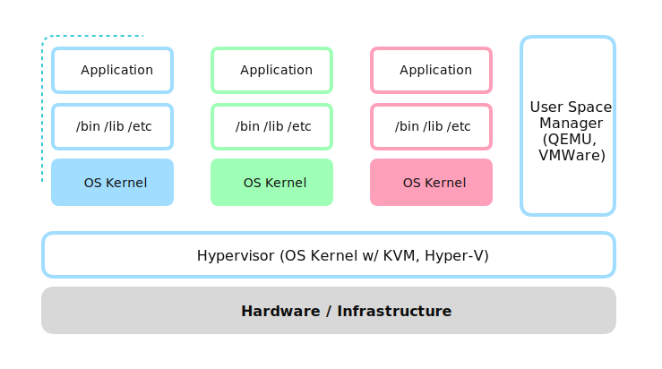
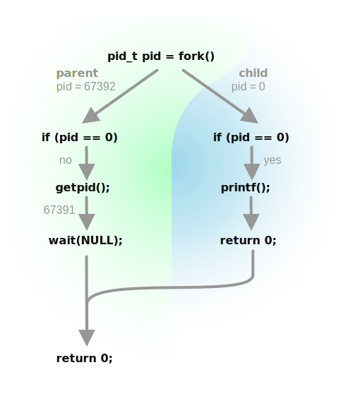

Underneath Docker (0): Write a Minimal Container Engine in C!
Prerequisites: C Programming Language
For researching propose, I was diving into Docker and other containerization techniques. After a while, I was so astonished by the principles underneath it, and I decided to implement a minimal container engine in C. Huge shoutout to Bilibili uploader 造轮子的工程师 and his series Reinventing the Wheel: writing Docker from stratch for giving me great inspiration to this series.
This series is in Chinese (Simplified) and English (US), and I would update them simutaneously. A requirement is Linux (not even Unix-like kernels like darwin / bsd), but it can work on any architecture.
What is Docker?
Containerization, just like its older brother virtualization, is a technique for environment isolation. It might seem familiar for software developers, but why we need isolation techneques?
Almost all software is composed of three parts:
- Executable, including static library
- Shared library, also known as dynamic link library
*.so - Other files, such as config, cache, and persistent storage
The appearance of shared libraries avoids the need for executables to link large and necessary static library files, such as libc, openssl, etc., making the software smaller in size and easier to distribute.
When the operating system runs an executable, it first loads the dynamic linker ld-linux.so.2 into memory, and then executes the code within. The dynamic linker finds and loads the required shared library into memory. It then translates the program's references to symbols in the shared library, to the corresponding memory addresses of those symbols in the shared library, at which point the program can use the functions and other symbols defined in the dynamic link library normally.
At this point, some problems may arise. What if you download the required executable, but you don't have the necessary shared library? In large programs that require other executables, config files, etc., and they need to be in specific locations, what should be done? What if a bunch of programs have conflicting dependencies because of version issues?
Virtualization technology was born to solve the problem. Virtualization technology allows multiple isolated operating systems, known as virtual machines (Virtual Machine, VM), to run on a single hardware infrastructure, and allows communication between them through networking.
Built directly on hardware, the operating system that manages VMs is called a hypervisor. Hypervisors can also be implemented through user programs on general operating systems, referred to as type-2 hypervisors. Common hypervisors include:
- KVM (Kernel-based Virtual Machine), open-sourced, part of Linux kernel
- VMWare® ESXi™, proprietary, enterprise-level Type-1 Hypervisor
- VMWare® Workstation, proprietary, workstation level Type-2 Hypervisor
- Microsoft® Hyper-V
Hypervisors abstract hardware resources into a unified interface (such as VirtIO), allowing the operating system above to run on different hardware. Program distributors only need to package the operating system, dependencies, and programs into a VM image, which can then be distributed to different Infrastructures, and even different hypervisors that are compatible with each other. It is worth noting that since a binary made of instructions cannot run across different architectures, all pre-compiled operating systems and VM images also cannot run on different architectures. This forms the following architecture:

In this way, each VM carries a complete operating system, allowing different operating systems, different ABIs (Application Binary Interface, What is ABI? What is API?), different calling conventions, but software using the same instruction set to run on a single hardware, greatly increasing flexibility and portability.
However, in actual production environments, the vast majority of software is based on the Linux kernel and uses Linux's ELF ABI. Thus, having an operating system kernel in each VM seems to be unnecessary and can waste significant system resources. Why not build isolated systems on the Linux kernel itself? The idea of containerization was born from this.
Setting aside the VM's bottom-up approach, which aims to abstract underlying infrastructures as much as possible for better compatibility; we use a top-down approach, focusing on how to achieve isolation between containers using the fewest resources possible.
- We need an isolated filesystem, otherwise it can lead to dependency version conflicts, file disruptions, etc.
- We need isolated processes and PID space, to make processes in other containers invisible to the current container, avoiding conflicts between some software.
- We need isolated user groups to prevent users in one container from having higher privileges to manipulate other containers.
- We need isolated IPC (Inter-Process Communication) and signal queues to prevent communication between containers through IPC.
- We need isolated network stacks and routing tables, etc., to ensure containers can communicate through the network and with the outside world.
- We need isolated hostnames.
Due to Linux's philosophy that everything is a file, isolating the file system is paramount; other parts are largely about creating corresponding files in the isolated file system, such as /proc for storing isolated process space, /etc/hostname for storing host names, etc.
Fortunately, Linux kernel's namespaces make all this isolation possible. Linux can create several independent namespaces for the above six aspects, and each aspect of a process can run in one namespace; thus, we just need to assign all the processes inside a container to the same namespaces, and have different namespaces between containers. Note that I have used the plural form of namespace here to emphasize that each aspect's Namespace is independent.
Step 1: Run programs
In Linux, all processes have a parent process, and creating a child process through the fork() method inherits the parent process's namespaces. All processes are descendants of the process with PID=1, named init, so without intervention, all processes are in the same namespaces. You can use ps aux to check the process table.
[endaytrer@endaytrer-arch ~]$ ps aux
USER PID %CPU %MEM VSZ RSS TTY STAT START TIME COMMAND
root 1 0.0 0.0 23288 14520 ? Ss Aug13 0:01 /sbin/init
root 2 0.0 0.0 0 0 ? S Aug13 0:00 [kthreadd]
root 3 0.0 0.0 0 0 ? I< Aug13 0:00 [rcu_gp]
root 4 0.0 0.0 0 0 ? I< Aug13 0:00 [rcu_par_gp]
root 5 0.0 0.0 0 0 ? I< Aug13 0:00 [slub_flushwq]
root 6 0.0 0.0 0 0 ? I< Aug13 0:00 [netns]
root 8 0.0 0.0 0 0 ? I< Aug13 0:00 [kworker/0:0H-kblockd]
root 11 0.0 0.0 0 0 ? I< Aug13 0:00 [mm_percpu_wq]
root 13 0.0 0.0 0 0 ? I Aug13 0:00 [rcu_tasks_kthread]
root 14 0.0 0.0 0 0 ? I Aug13 0:00 [rcu_tasks_rude_kthread]
root 15 0.0 0.0 0 0 ? I Aug13 0:00 [rcu_tasks_trace_kthread]
root 16 0.0 0.0 0 0 ? S Aug13 0:00 [ksoftirqd/0]
root 17 0.0 0.0 0 0 ? I Aug13 0:07 [rcu_preempt]
root 18 0.0 0.0 0 0 ? S Aug13 0:00 [rcub/0]
所以, 为达到隔离的效果, 只需创建一个根进程, 并将其namespaces设置为新的namespaces即可. 如果根进程为shell, 则可以通过命令行的方式在此上面新建新的进程, 并且在同样的namespaces中.
在隔离namespaces之前, 试一下通过最简单的方式创建一个新的进程吧!
So, to achieve isolation, you only need to create a root process and set its namespaces to newly-created namespaces. If the root process is a shell, you can create new processes as its descendent via the command line, and they will be in the same namespaces.
Before isolating namespaces, try creating a new process in the simplest way possible!
#include <unistd.h>
#include <sys/wait.h>
#include <stdio.h>
int main() {
pid_t pid = fork();
if (pid < 0) {
fprintf(stderr, "Fork failed!\n");
return -1;
}
if (pid == 0) {
// child process
printf("I am the child!\n");
sleep(1);
printf("Child is terminating!\n");
return 0;
}
// parent process
pid_t parent_pid = getpid();
printf("I am the parent with pid %d! ", parent_pid);
printf("the child's pid is %d\n", pid);
wait(NULL);
printf("Child exited.\n");
return 0;
}
The fork() function is a call once, return twice function. If an error occurs, the process will not be created, and it returns -1. Otherwise, it will return separately in the parent process and the child process: the parent process returns the child process's PID, and the child process returns 0. The following diagram illustrates the relationship between calls:

After calling fork(), the parent process skips the "if" statement because pid > 0, directly executing getpid to get the parent process PID; the child process enters the if statement because pid == 0, executing the content inside the if statement.
Using the wait() syscall, the parent process will wait for the child process to finish before continuing to execute; wait also returns the child process's return code, which can be used to determine whether the child process has exited normally.
$ gcc -o main main.c
$ ./main
I am the parent with pid 67936! the child's pid is 67937
I am the child!
Child is terminating!
Child exited.
After fork, the child process still executes the same program code; it needs to use exec() to run another executable file. The exec syscall corresponds to many functions in libc, such as execl, execlp, execle, execv, execvp, execvpe. In this case, the function used is int execv(const char *pathname, char *const argv[]), which executes the program specified by pathname, and passes in the argument vector argv.
#include <unistd.h>
#include <sys/wait.h>
#include <stdio.h>
int main(int argc, char *argv[]) {
if (argc <= 1) {
fprintf(stderr, "Usage: main PROGRAM [args]\n");
return -1;
}
pid_t pid = fork();
if (pid < 0) {
fprintf(stderr, "Fork failed!\n");
return -1;
}
if (pid == 0) {
// child process
printf("I am the child!\n");
execv(argv[1], argv + 1);
fprintf(stderr, "Exec failed!\n");
return -1;
}
// parent process
pid_t parent_pid = getpid();
printf("I am the parent with pid %d! ", parent_pid);
printf("the child's pid is %d\n", pid);
wait(NULL);
printf("Child exited.\n");
return 0;
}
Here, we introduce int argc and char *argv[], and use argv[1] as the program path. Here, argv + 1 points to the first position of argv (counting from 0). This way, using main /bin/ps aux is equivalent to running /bin/ps, with the argument list ["/bin/ps", "aux"].
The characteristic of the exec() family of functions is that they are called once, never return. If an error occurs, the process will not be created and will return. Otherwise, the current process will execute the specified program. Since the program being executed is no longer the original program, if there are no errors, the code after exec() will not be executed. By contrast, the parent process skips the if code block and continue to wait for the child process to end using the wait method.
$ gcc -o main main.c
$ ./main /bin/ps aux
I am the parent with pid 70096! the child's pid is 70097
I am the child!
USER PID %CPU %MEM VSZ RSS TTY STAT START TIME COMMAND
root 1 0.0 0.2 178136 9536 ? Ss Aug11 0:06 /sbin/init
root 2 0.0 0.0 0 0 ? S Aug11 0:00 [kthreadd]
root 3 0.0 0.0 0 0 ? I< Aug11 0:00 [rcu_gp]
root 4 0.0 0.0 0 0 ? I< Aug11 0:00 [rcu_par_gp]
root 5 0.0 0.0 0 0 ? I< Aug11 0:00 [slub_flushwq]
root 6 0.0 0.0 0 0 ? I< Aug11 0:00 [netns]
...
endaytr+ 70096 0.0 0.0 2200 760 pts/3 S+ 00:57 0:00 ./main /bin/ps aux
endaytr+ 70097 100 0.1 11268 4432 pts/3 R+ 00:57 0:00 /bin/ps aux
Child exited.
Use clone Instead of fork to Setup Namespaces
After using fork and exec to create a process, you can use clone with a namespace flag as a replacement for fork.
The difference between clone and fork is that clone requires manually setting the child process's stack space, and you must pass the flag SIGCHLD to declare it as a child process. At the same time, unlike fork, which returns twice, clone will pass a function pointer for the child process to run: the child process no longer returns to the calling function but directly executes the passed-in function.
int clone(int (*fn)(void *_Nullable), void *stack, int flags, void *_Nullable arg)
When calling clone, the child process goes into the function fn and accepts the parameters passed from void *_Nullable arg, using stack as the top of the stack. The function in the parent process returns the child process's pid.
When allocating stack space for the child process, you need to use mmap to create the stack space (usually 1MiB), and then use a pointer to point to the highest address of this space. Then this pointer can be passed into the clone parameters:
void *child_stack = mmap(NULL, STACK_SIZE, PROT_READ | PROT_WRITE, MAP_PRIVATE | MAP_ANONYMOUS | MAP_STACK, -1, 0);
void *stack_top = (void *)((uint64_t)child_stack + STACK_SIZE);
With slight modifications to the other parts, you can implement the clone version of the program:
#define _GNU_SOURCE
#include <sched.h>
#include <stdint.h>
#include <sys/mman.h>
#include <unistd.h>
#include <sys/wait.h>
#include <stdlib.h>
#include <stdio.h>
#define STACK_SIZE 0x100000
int child(void *arg) {
printf("I am the child!\n");
char **argv = (char **)arg;
execv(argv[0], argv);
fprintf(stderr, "Exec failed!\n");
return -1;
}
int main(int argc, char *argv[]) {
if (argc <= 1) {
fprintf(stderr, "Usage: main PROGRAM [args]\n");
return -1;
}
void *child_stack = mmap(NULL, STACK_SIZE, PROT_READ | PROT_WRITE, MAP_PRIVATE | MAP_ANONYMOUS | MAP_STACK, -1, 0);
void *stack_top = (void *)((uint64_t)child_stack + STACK_SIZE);
int clone_flags = SIGCHLD;
int pid;
if ((pid = clone(child, stack_top, clone_flags, (void *)(argv + 1))) < 0) {
fprintf(stderr, "Clone failed!\n");
return -1;
}
// parent process
pid_t parent_pid = getpid();
printf("I am the parent with pid %d! ", parent_pid);
printf("the child's pid is %d\n", pid);
wait(NULL);
printf("Child exited.\n");
return 0;
}
The result is the same as fork version.